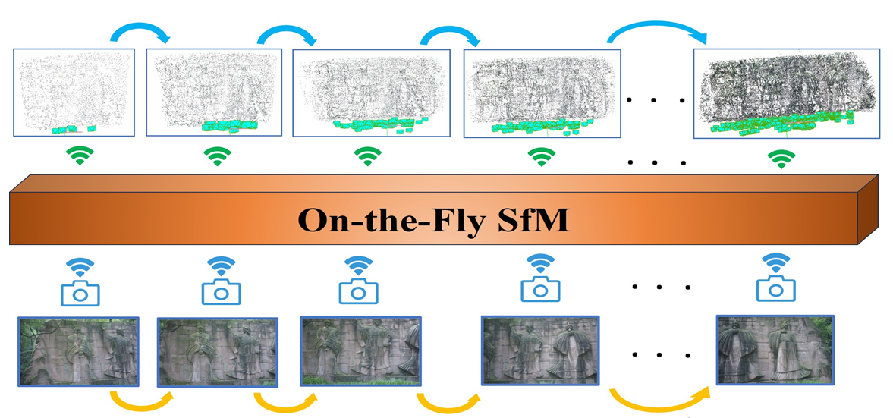
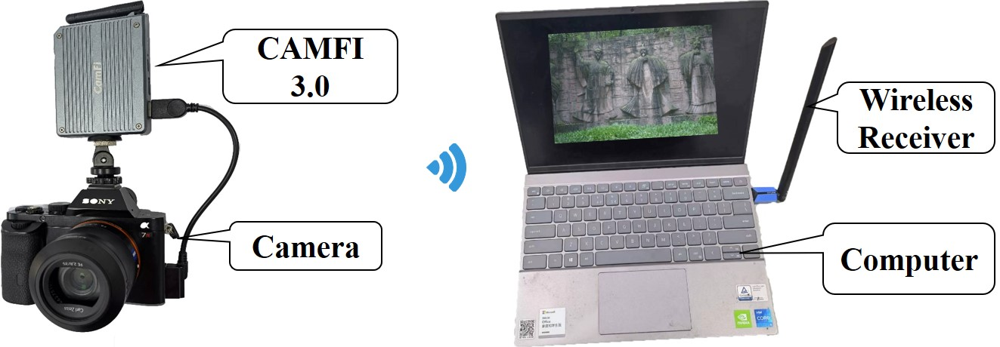
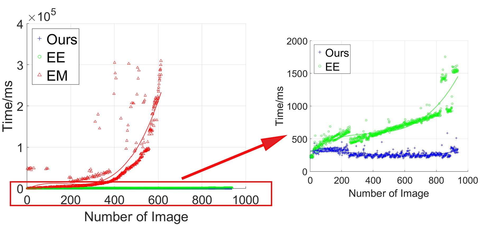
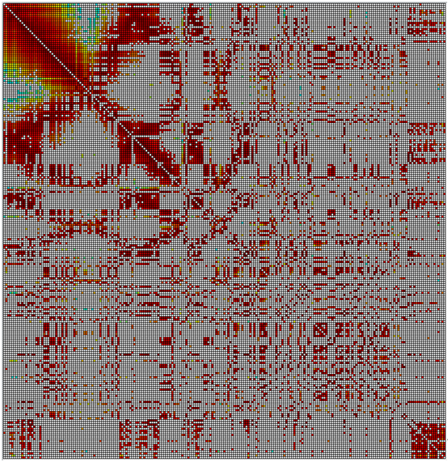
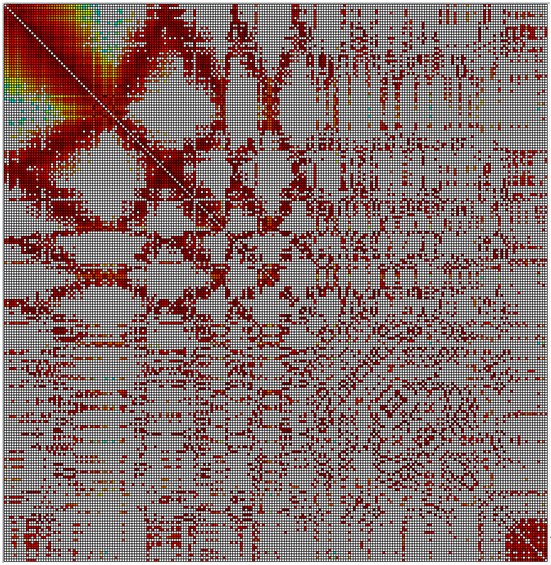
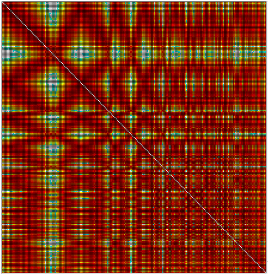
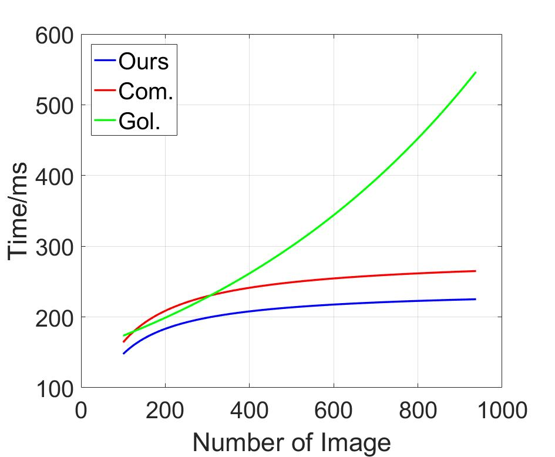
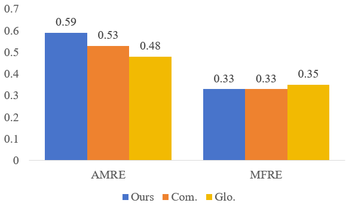
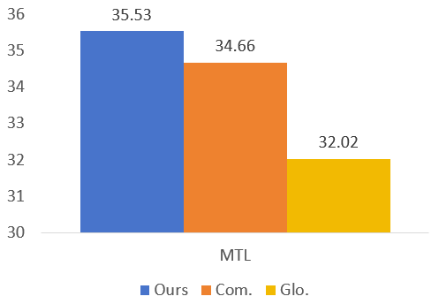

Zongqian Zhan, Rui Xia*, Yifei Yu, Yibo Xu, Xin Wang*School of Geodesy and Geomatics, Wuhan University, Wuhan, P.R.China


The proposed on-the-fly SfM
Hardware
Abstract
Over the last decades, ample achievements have been made on Structure from motion (SfM).
However, the vast majority of them basically work in an offline manner, i.e.,
images are firstly captured and then fed together into a SfM pipeline for obtaining poses and sparse point cloud.
In this work, on the contrary, we present an on-the-fly SfM: running online SfM while image capturing,
the newly taken On-the-Fly image is online estimated with the corresponding pose and points, i.e., what you capture is what you get.
More specifically, our approach firstly employs a vocabulary tree that is unsupervised trained using learning-based global features for fast image retrieval of newly fly-in image.
Then, a robust feature matching mechanism with least squares (LSM) is presented to improve image registration performance.
Finally, via investigating the influence of newly fly-in image’s connected neighboring images,
an efficient hierarchical weighted local bundle adjustment (BA) is used for optimization.
In this section, we report extensive experimental results on various datasets to demonstrate the capability of “what you capture is what you get” for our on-the-fly SfM.
All experiments are run on the machine with 16 CPU processors and RTX3080 GPU.
1.Datasets
All the datasets used in our experiments are shown in the following Table:
In this work, some free parameters are empirically set.
For the online image matching, the vocabulary tree is with 5-layer depth and 5 sub-clusters for each node.
Each new fly-in images selects Top-30 similar images for subsequent matching. The small local window in LSM is set as 15*15 pixels.
For efficient BA, as each image in the ripple has top-N candidate images which might return a large BA block,
only top-8 similar images are considered. The constant weighting parameter k = 2 in all experiments.
3.Performance of fast image retrieval
Based on SX and fr3_st_far, we investigate three different image matching strategies: exhaustive matching using Colmap with default setting (EM),
exhaustive Euclidean comparison using learning-based global feature (Hou and Xia, 2023) (EE) and our on-the-fly SfM (Ours)
Here is time consuming result on fr3_st_far.

Here is overlapping graph of SX.



Ours
EE
EM
Vertical and horizontal axis are image ID. The darker red the pixel is, the higher possibility the corresponding image pair overlaps with each other.
4.Performance of efficient local bundle adjustment
To demonstrate the efficacy of the local bundle adjustment in our on-the-fly SfM, three bundle adjustment solutions are compared:
(1) a global bundle adjustment that enrolls all images is performed (Glo.)
(2) a combined solution integrated with local and global bundle adjustment (Com.)
(3) local bundle adjustment with hierarchical weights (Ours).
Based on fr3_st_far, here is the cost time of bundle adjustment as the number of images changes

For the quality of our local bundle adjustment solution, we choose three indicators: averaging mean reprojection error of each BA (AMRE),
mean reprojection error of final BA (MFRE) and mean track length (MLT).
The result of fr3_st_far are shown below:


5.On-the-fly performance of our SfM
The table below presents the average processing time for all images of each dataset,
in particular, several key procedures are reported: image transmission (IT), feature extraction (FE), online image matching (OIM),
two-view geometric verification (GV), Image registration (IR), Triangulation (Tri.) and bundle adjustment (BA).
COST TIME OF EACH CORE STAGE IN OURS SFM (MS)
Dataset
SX
YX
fr1_desk
fr1_xyz
fr3_st_far
NoI
221
349
613
798
938
FE
617
625
157
155
172
OIM
1282
1391
872
911
1247
GV
1285
951
168
187
359
IR
91
72
41
56
72
Tri.
158
171
116
29
60
BA
190
131
74
184
198
Total
3623
3341
1428
1522
2108
IT
4200
4400
3500
3500
3500
Acknowledgement
This work was jointly supported by the National Science Foundation of China (No. 61871295, 42301507) and
Natural Science Foundation of Hubei Province, China (No. 2022CFB727) and ISPRS Initiatives 2023.
Reference
J. Sturm, N. Engelhard, F. Endres, W. Burgard, and D. Cremers, “A benchmark for the evaluation of RGB-D SLAM systems,”
in IEEE International Conference Intelligent. Robots System, 2012, pp. 573–580.
Q. Hou, R. Xia, J. Zhang, et al., “Learning visual overlapping image pairs for SfM via CNN fine-tuning with photogrammetric geometry information,”
in International Journal of Applied Earth Observations and Geoinformation, 2023, 103162.
Y. Yue, X. Wang and Z. Zhan, “Single-Point Least Square Matching Embedded Method for Improving Visual SLAM,” in IEEE Sensors Journal, 2023, pp. 16176-16188.
About us
If you have any questions or advice, you can contact us via following address:
zqzhan@sgg.whu.edu.cn, Zongqian Zhan, WuHan University